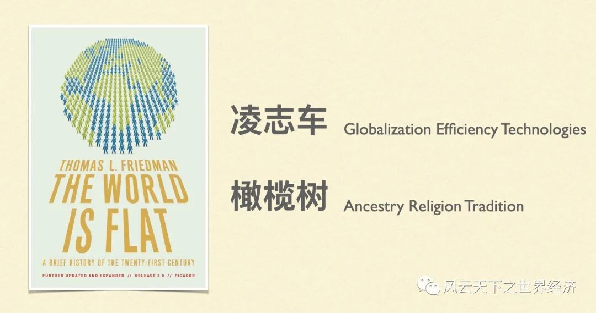
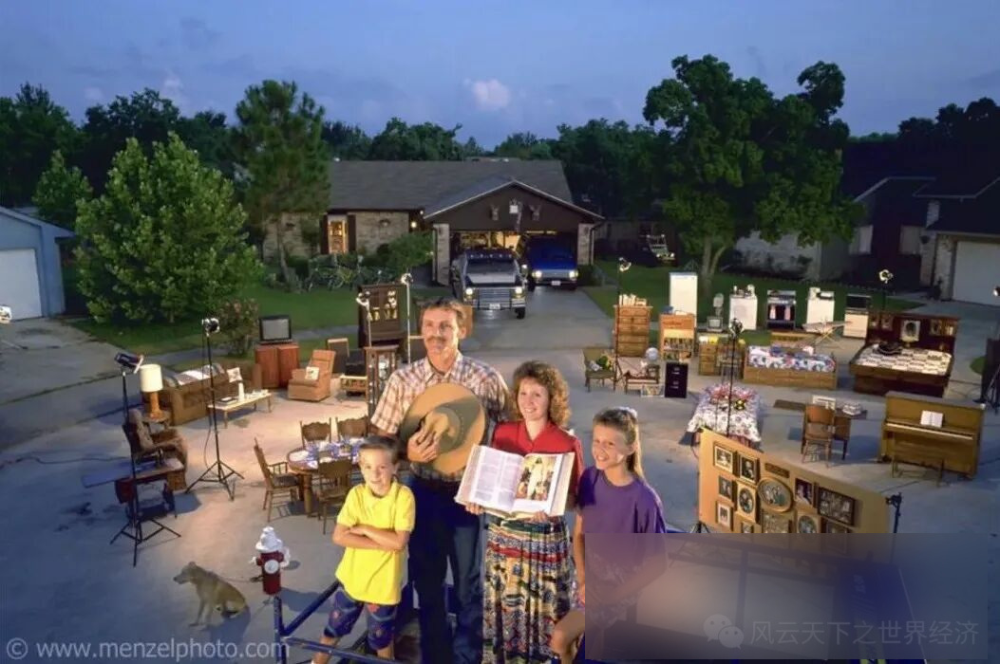
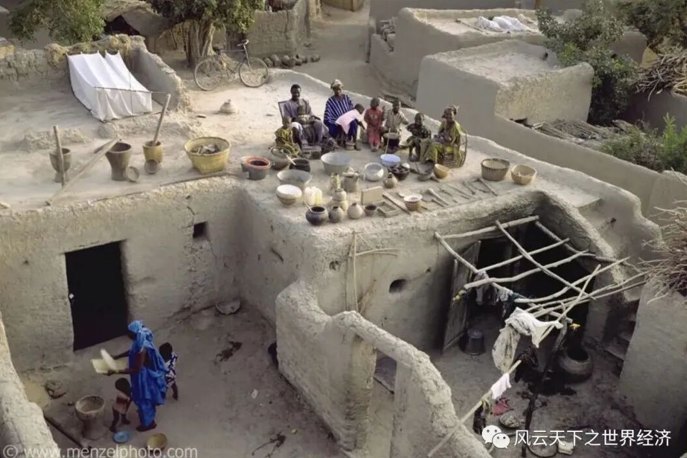
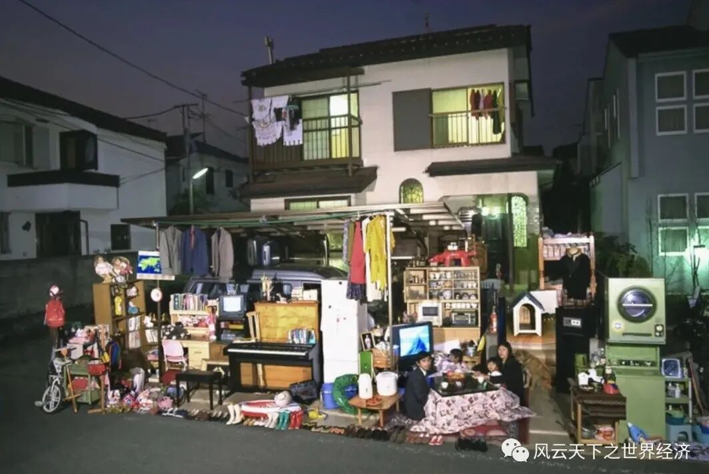
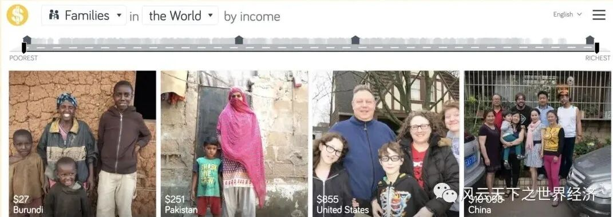
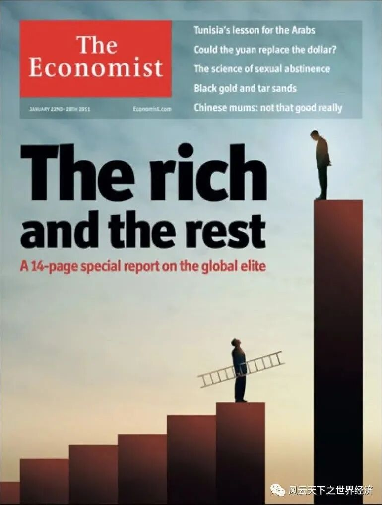
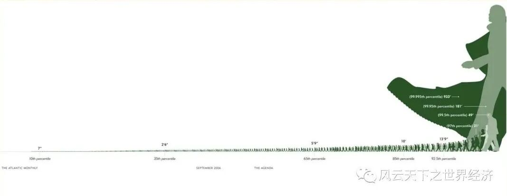

托马斯·弗雷德曼的谎言
这个谎言和一部在十几年前足以睥睨整个出版业的现象级畅销书有关，书的名字叫做《世界是平的：21世纪简史》，它的作者是财经作家托马斯·弗里德曼。在这本书中，为了渲染全球化势不可挡这样一个终极理念，作者创造了两个意象：一个是橄榄树，一个是凌志车。橄榄树取自黎巴嫩，在这个国家北部的一个小山村里生长着16棵橄榄树，它们至少有6000年的历史，被称为“诺亚之树”。这里是文明最早光顾的地方之一，它也是众多宗教里的人类起源之地，因此用橄榄树来指代指待每个人内心所守候的传统具有天然的合理性。

图1 凌志车与橄榄树
而凌志车的背后则是像丰田这样的跨国公司。汽车生产线上那些娴熟的机器人手臂以及日本车企风靡全球的精益管理理念，让凌志车成为最完美的全球化代名词。而这一切与橄榄树的老干虬枝是如此地格格不入。
为了强调橄榄树之根深植于每一个人的内心，作者在书中转引了一个故事。这个故事来自马尔克斯的小说《百年孤独》，该书迄今依然是南美文学的巅峰之作。
有个村子的老百姓被一种奇怪的带有传染性的健忘症所折磨。这种病最早发生在村子里中年长者身上，很快就传染给了村子里的其他人。染上这种病的人，平时连最熟悉的日常用品的名字都忘得一干二净，一位没有感染上的年轻人为了减少损失，给所有的物品都贴上了标签，“这是桌子”，“这是窗户”，“这是奶牛，每天早晨要挤奶”。在通往城市的主要大道上，他树了两块牌子，其中一个写着“我们的村庄叫马坎多”，较大的一个写着“上帝在此”。——《百年孤独》
这个最大的牌子提醒我们不能忘记我们属于谁，否则内心那些深刻的人性将丧失殆尽。
但是，橄榄树终归不是凌志车的对手。弗雷德曼在书中的后半部则充斥着凌志车与橄榄树角力的故事。对于作者而言，最终的胜利者一定是凌志汽车，因为地球是平的。
从太空凝视地球，这或许是对的，因为地球的形状决定了它只有一个球面。地球如此地缺乏棱角是造物的疏忽，否则我们至少会有两个平面。人们可以在一面上耕作，在另一面上调情。
如果换一个更近的视角，你会发现地球的纬线并非像我们想象中那样拥有光滑的弧度。大块的陆地被更大的海洋所阻隔，其上沟壑丛生。
当然，如果不再纠缠这些地理学上的争辩，而去看看我们生存的真实世界，你一定不会认同弗里德曼的妄言。
物质世界，影像里的他们和他们
经济史学家格里高利·克拉克曾经说过，“收入，比任何宗教和意识形态都更塑造人们的生活”。而收入最直接的体现就是人们所有用物品的多寡和成色。沿着这样的逻辑，美国摄影师Perter Menzel发起了一个庞大的全球拍摄计划，并于1995年将拍摄的影像汇集成《物质世界: 全球家庭肖像》(Material World: a Global Family Portrait)一书出版。这是一个全球30个国家的引人入胜的视觉生活时间胶囊，由16位世界顶尖摄影师拍摄。

图2 美国家庭肖像
在这30个国家中，门泽尔找到了一个在统计学意义上具有平均收入水平的家庭，并将他们和他们的所有物品一起搬到户外拍摄。门泽尔的初衷是从功利主义和感性主义出发，通过物质透镜来折射跨文化的多样性。但是当我们用“东西”来理解世界和我们在其中的位置时，我们竟然发现我们生存的世界竟是如此不同。

图3 西非国家马里的家庭
以上图片里家庭来自西非国家马里。男主人是39岁的 Soumana Natomo，他有两个妻子，分别是Pama Kondo (28岁)和 Fatouma Niangani Toure (26岁)。在马里，这种情况司空见惯，因为这样做能增加他们的后代，反过来也增加了他们老年时得到赡养的机会。Soumana 现在有8个孩子，不过这些儿童中有多少能够存活下来还不确定，因为马里的婴儿死亡率位居世界前十。他们所拥有的物品少得可怜，除了能够遮蔽风雨的土屋之外，也就是只有一些坛坛罐罐等生活必需品了。
图4 云南农村家庭
这个大家庭的九位成员住在云南农村的一套三居室。他们没有电话，通过两台收音机和家里最珍贵的财产——一台电视机获取新闻。在未来，他们希望得到一个30英寸屏幕、一个录像机和一个冰箱。照片中不包括他们的100棵柑橘树、菜地和三头猪。

图5 日本家庭
43岁的 Sayo Ukita 和许多日本女性一样，生孩子相对较晚。她最小的女儿现在上幼儿园了，还没有承受考试和周六“补习班”的压力，这些都是她九岁的姐姐要面对的。女主人是全职太太，这有助于她管理孩子们繁忙的日程安排，维持他们在东京132平方米的家庭秩序，家里塞满了衣服、家用电器，还有给女儿和狗狗的大量玩具。尽管拥有现代生活的所有便利，但这个家庭最珍贵的财产是一枚戒指和祖传的陶器。
在真实世界的影像面前，再雄辩的文字都显得多余。
值得一提的是，《物质世界》是一部制作成本高达60万美元的巨著。为了完成这项计划，门泽尔卖掉了自己的房子，刷爆了所有的信用卡，也耗尽了他从朋友那里拼凑来的各种小额贷款。这本书的命运本身就是对我们生活的物质世界的生动讽刺——在这个世界里，即便是对物质性和过度行为发表有意义的社会评论，也要付出极高的物质成本。另外，门泽尔的千金一掷告诉我们：要想呈现物质世界的巨大差异，也要耗费你巨大的物质。
这个世界上有一条美元街，我们都是这条街上的居民
如果世界不同角落的四个家庭影像不足以说明我们的世界如此不同，那么你还可以来一条街看一看。
你是否可以想象，如果世界是一条街道，你的地址就是你家庭的月收入，所有的住宅编号按家庭收入从贫到富依次排列，最贫穷的生活在最西侧，而最富裕的生活在最东侧，那么，每一个家庭和他们的生活场景会是什么模样？
这个看似不可思议的构想在瑞典卡罗林斯卡学院国际卫生领域的教授汉斯·罗斯林与他的摄影师儿媳安娜·罗斯林手中成为了现实。罗斯林教授被称为“数据视觉化的绝地战士”以及“让数据唱歌的人”，他们联合创立了公益机构Gapminder，旨在用“有生命的”动态图表、影像等直观形式，展现各国重大的数据变迁，呈现不同的生活景象，借此引起人们对贫困、医疗卫生等全球公益主题的真切关注。
他们派出摄影师走访了全球数十个国家，拍摄各国家庭的日常生活场景、用品与孩子们最喜爱玩具的照片。以影像记录这样一种简单的方式，把世界家庭面貌浓缩在一条“街”上。迄今为止，这个项目已经拍摄了50个国家超过260个家庭。

图6 美元街“街景”
有一位曾经常年生活在这条街东1号的居民对这个项目大加赞赏，这个人就是微软创始人比尔·盖茨。曾经有一段时间，他每天会花几个小时流连在美元街。“你可以看到50个国家不同收入水平的人拥有的从炊具到牙刷的一切东西。通过比较美元街上的邻居，你可以对世界各地的生活有一个非凡的洞察力。”在美元街上，他发现了七件令人惊讶的事实：
1.Income explains more differences than geography or ethnicity 收入比地域或种族更能解释差异
2.Everyday objects tell you a lot about how people live 日常物品告诉你很多关于人们如何生活的信息
3.Everyone wants a soft bed and delicious food 每个人都想要一张柔软的床和美味的食物
4.Cat ladies and dog people are everywhere 爱猫的女士和爱狗的人无处不在
5.People’s most prized possessions are pretty unpredictable 人们最珍贵的财产是不可预测的
6.All people brush their teeth—but not all people have toothbrushes 所有人都刷牙ー但不是所有人都有牙刷
7.Almost everyone has a cell phone 几乎每个人都有一部手机
相比于比尔·盖茨的感性与率真，美元街的“管委会主任”安娜·罗斯林的见解可能更加发人深省：“看到大多数人大部分时间都在日常事务中挣扎，他们没有那么异国情调，也没有那么可怕，这让世界不那么可怕。”
侏儒与巨人——简·潘大游行
26和3,800,000,000，如果在以上两个数字之间画上等号，你一定感到不可思议。但是，这就是我们所生活的世界的真实样子。2016年，《经济学人》杂志以“富人和其他人”（The Rich and the Rest）为选题，出版了长达数十页的全球收入分配研究报告，以详尽的统计数据考察了全球不平等的残酷现实：世界上最富有的26个人所拥有的财富，等于世界上最贫穷的38亿所拥有的财富总和！

图7 《经济学人》26人与38亿人
如果你觉得这种掐头去尾的对比遮蔽了大部分事实的话，简·潘大游行则会给你一个关于全球收入不平等全景式的展示。
1971年，荷兰经济学家简•潘 (Jan Pen) 发表了一篇著名的论文，尽管题目《收入分配》(Income Distribution)）并不那么扣人心弦，但这本书唤起了一个令人难忘的画面，这就是如何看待一个经济体中的收入模式。他让所有英国人像游行队伍一样走过，而每个人的身高就是他的收入水平，游行队伍是按照收入顺序排列的，收入最低的在前面，最高的在后面。
在这个庞大的游行队伍中，简·潘首先看到的是一系列身高不断增长的人。但是这样的画面又太平淡了。除此以外，他还发现大多数时候队伍是由一群矮人组成的，然后在最后看到一些难以置信的巨人。
如果借用这个创意，让全世界的人按照收入水平来一场大游行，会是怎样一番景象？这个世界大约有70亿人口，人们的身高与所在国家的人均收入成正比。整个游行队伍的平均身高是1.82米，如果让队伍匀速前进，所有国家通行完正好一个小时。这个队伍走起来是个什么样子呢？你所看到的是：

图8 简·潘大游行
前6分钟通行的主要是撒哈拉以南国家的人们，他们的身高是29cm；
第11分钟，身高73厘米的印度人出现，他们走完需要整整11分钟；
当时间过了半小时，中国人出现在人们的视野中。他们的平均身高是126cm，13分钟走完；
第42分钟，身高1.53米的中美洲国家伯利兹人到达；
3分钟后，身高1.64米的委内瑞拉人通过；
在游行的最后15分钟，队伍的升高陡然增加；
来自立陶宛的游行者身高5.32米，在第48分钟通过；
日本的游行者身高5.32米，在第53分钟通过；
游行队伍的最后3分钟主要由来自美国的7.76米的游行者组成；
而身高8米的阿联酋人和11.2米的卢森堡人走在队伍的末尾，他们占用的时间不足1秒。